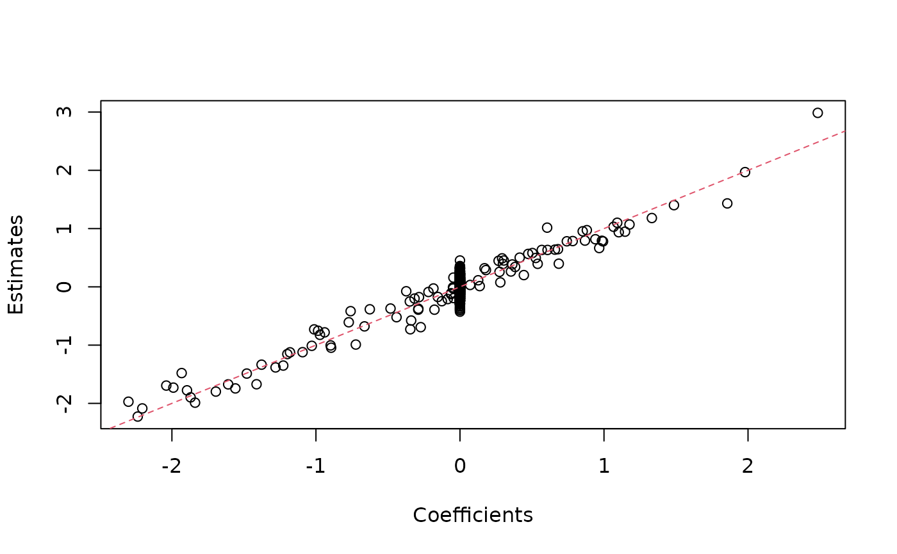

This is now defunct. Please try out select_counts and
thin_2group.
poisthin(
mat,
nsamp = nrow(mat),
ngene = ncol(mat),
gselect = c("max", "random", "rand_max", "custom", "mean_max"),
gvec = NULL,
skip_gene = 0L,
signal_fun = stats::rnorm,
signal_params = list(mean = 0, sd = 1),
prop_null = 1,
alpha = 0,
group_assign = c("frac", "random", "cor"),
group_prop = 0.5,
corvec = NULL
)A matrix of count data. The rows index the individuals and the columns index the genes.
The number of samples to select from mat.
The number of genes to select from mat.
How should we select the subset of genes? Should we choose
the ngene most median expressed genes ("max"), a random sample
of the genes ("random"), a random sample of the most expressed
genes ("rand_max"), a user-provided list ("custom"), or by maximum
mean expression level ("mean_max")?
If "custom", then gvec should be specified. Expression levels
of a gene are measured by median expression across individuals with ties broken
by mean expression.
A logical of length ncol(mat). A TRUE in position \(i\)
indicates inclusion into the smaller dataset. Hence, sum(gvec) should
equal ngene.
The number of maximally expressed genes to skip.
Not used if gselect = "custom".
A function that returns the signal. This should take as
input n for the number of samples to return and then return only
a vector of samples.
A list of additional arguments to pass to signal_fun.
The proportion of genes that are null.
If \(b\) is an effect and \(s\) is an empirical standard deviation, then we model \(b/s^\alpha\) as being exchangeable.
How should we assign groups? Exactly specifying the
proportion of individuals in each group ("frac"), with a
Bernoulli distribution ("random"), or correlated with latent factors
("cor")? If group_assign = "cor", then you have to specify
corvec. If group_assign = "frac" or
group_assign = "random", then the proportion of samples in each
group is specified with the group_prop argument.
The proportion of individuals that are in group 1.
This proportion is deterministic if group_assign = "frac", and
is the expected proportion if group_assign = "random". This
argument is not used if group_assign = "cor".
A vector of correlations. corvec[i] is the correlation
of the latent group assignment vector with the ith latent confounder.
Only used if group_assign = "cor". This vector is constrained
so that crossprod(corvec) < 1. The number of latent factors
is taken to be the length of corvec. Note that the correlations of the
latent factors with the observed group-assignment vector (instead of the
latent group-assignment vector) will be corvec * sqrt(2 / pi).
A list with the following elements:
Y: A matrix of altered counts with nsamp rows
and ngene columns.
X: A design matrix. The first column contains a vector ones (for an
intercept term) and the second column contains an indicator for group membership.
beta: The approximately true effect sizes of \(log(Y) ~ X\beta\).
corassign: The output from the call to corassign.
Only returned if group_assign = "cor".
Given a matrix of RNA-seq counts, this function will randomly select two groups of samples and add signal to a known proportion of the genes. This signal is the log (base 2) effect size of the group indicator in a linear model. The user may specify the distribution of the effects.
The Poisson thinning approach first randomly assigns samples to be in one of two groups. Then, given this assignment, will Binomially sample counts with a sample size of the gene expression counts and a probability that is a function of the effect size. For details, see Gerard and Stephens (2021).
Gerard, D., and Stephens, M. (2021). "Unifying and Generalizing Methods for Removing Unwanted Variation Based on Negative Controls." Statistica Sinica, 31(3), 1145-1166 doi: 10.5705/ss.202018.0345 .
## Simulate data from given matrix of counts
## In practice, you would obtain Y from a real dataset, not simulate it.
set.seed(1)
nsamp <- 10
ngene <- 1000
Y <- matrix(stats::rpois(nsamp * ngene, lambda = 50), nrow = ngene)
## Apply thinning
poisout <- poisthin(mat = t(Y),
nsamp = 9,
ngene = 999,
signal_fun = stats::rnorm,
signal_params = list(mean = 0, sd = 1),
prop_null = 0.9)
#> poisthin() is now defunct.
#> Please use select_counts() and thin_2group() instead.
#> This message is displayed once per R session
## Dimension of count matrix is smaller.
dim(poisout$Y)
#> [1] 9 999
## Can verify signal was added by estimating it with lm().
betahat <- coef(lm(log2(poisout$Y + 1) ~ poisout$X[, 2]))[2, ]
plot(poisout$beta, betahat, xlab = "Coefficients", ylab = "Estimates")
abline(0, 1, col = 2, lty = 2)
